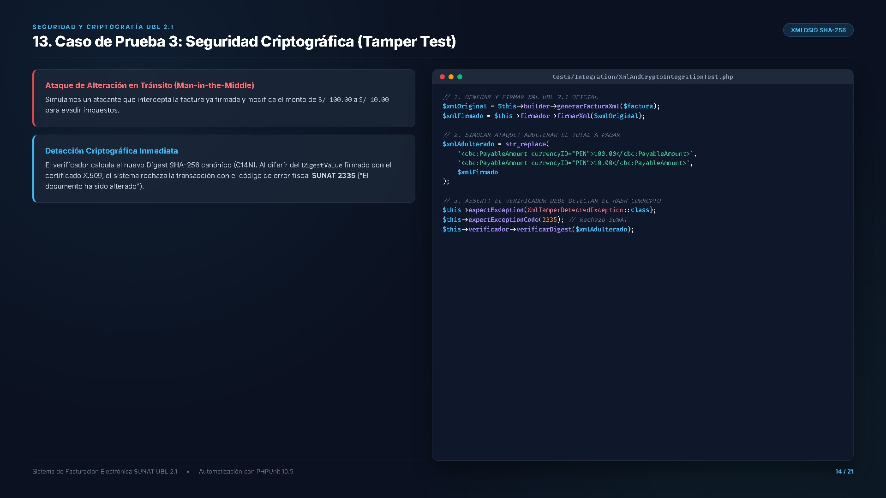
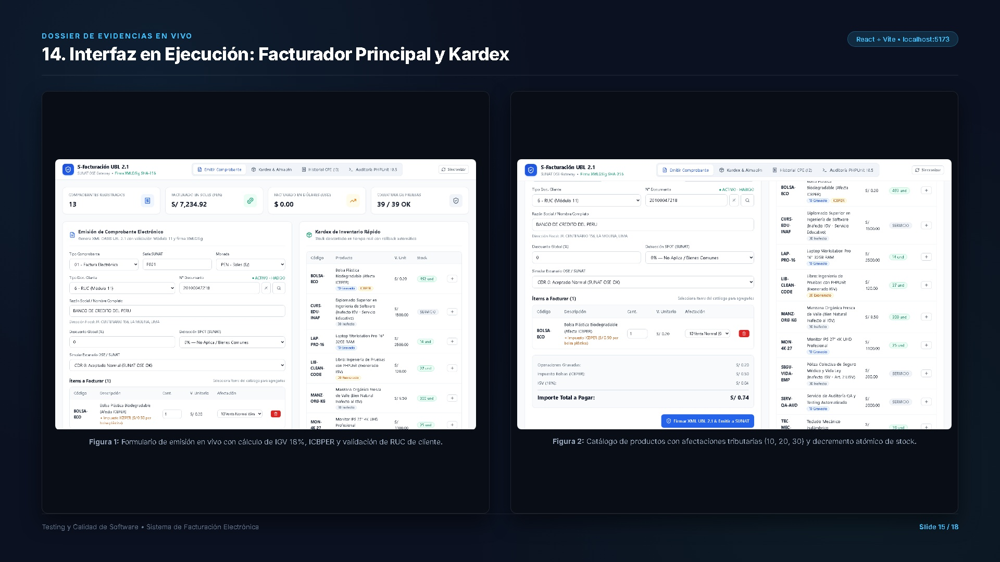
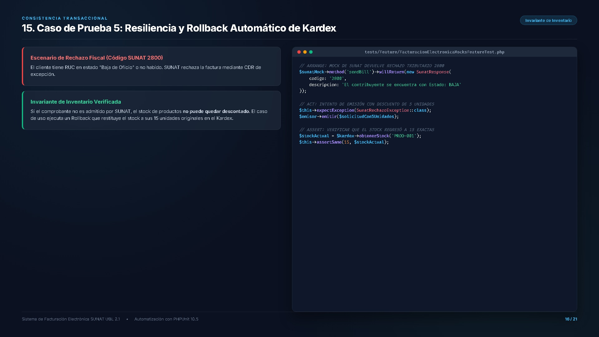

Creado por Sebastian Bergmann, es el framework de pruebas de la familia xUnit para el ecosistema PHP. Permite la ejecución automatizada de pruebas unitarias, de integración y funcionales con reportes formales.
Aislar y verificar cada regla tributaria, algoritmo criptográfico y transacción de inventario antes de que toque un servidor real de SUNAT.
Se ejecuta antes de cada método de prueba. En nuestro sistema inicializa el contenedor de dependencias, la base de datos SQLite en memoria (:memory:) y las entidades base para garantizar total aislamiento.
Se instancian los Value Objects, se invocan los casos de uso y se ejecutan las aserciones de negocio.
Se ejecuta después de cada método. Cierra conexiones de base de datos, purga buffers y asegura que ningún estado contamine la siguiente prueba.
Métodos estáticos que corren una única vez por clase para cargas pesadas como certificados digitales X.509 o esquemas XSD.
$calculadora->calcular($items)).Antes de codificar la lógica tributaria, se escribe el test con el resultado esperado por SUNAT. Al ejecutarlo en la terminal, la prueba falla inmediatamente (clase o cálculo inexistente).
Se implementa la solución más simple posible en el dominio fiscal (ej. algoritmo Módulo 11 o desglose de IGV 18%) hasta obtener la barra verde en PHPUnit.
Se extraen Value Objects inmutables, se limpian duplicidades y se mejora la legibilidad, manteniendo la suite de pruebas en verde en todo momento como red de seguridad.
En lugar de escribir 10 pruebas idénticas para validar diferentes RUCs, el atributo nativo #[DataProvider] alimenta un único método de prueba con una matriz exhaustiva de casos válidos e inválidos.
En PHP, assertEquals(100.0, "100.00") evalúa a VERDADERO debido a la coerción de tipos implícita. Esto es inaceptable en finanzas: un string "100.00" representa precisión decimal exacta, mientras que un float puede sufrir desbordamiento binario IEEE 754.
Exige que tanto el tipo de dato como el valor exacto coincidan. Si un cálculo devuelve float en lugar de string formateado a 2 decimales para el XML, la prueba falla de inmediato.
Verificamos que el sistema lance exactamente la excepción de negocio esperada:
$this->expectException(DomainValidationException::class);
Divide el dominio de entradas en clases válidas e inválidas donde el sistema se comporta de manera homogénea:
Los errores ocurren típicamente en los bordes de decisión de las reglas de negocio.
Regla SUNAT Boleta S/ 700.00: Si el importe supera S/ 700.00, es obligatorio identificar al cliente con DNI/RUC. Si es ≤ S/ 700.00, se permite "Clientes Varios".
Nuestra suite prueba exhaustivamente los 3 valores de frontera asegurando que S/ 700.01 lance la excepción fiscal de identificación requerida.
En pruebas de software es inaceptable depender de los servidores inestables de SUNAT (beta/producción). Mediante Mocks simulamos respuestas síncronas de CDR con códigos de éxito (0) y rechazos tributarios (2800, 2335).
| Capa del Sistema | Componentes Auditados | Tipo de Reglas Fiscales Verificadas | Tests | Aserciones | Estado |
|---|---|---|---|---|---|
| Dominio (Value Objects) | Ruc.php, MontoMonetario.php |
Algoritmo Módulo 11 de SUNAT, precisión decimal a 2 cifras | 14 | 48 | PASSED |
| Motor Tributario | CalculadoraTributaria.php |
IGV 18%, Exonerados, Inafectos, Gratuito e ICBPER bolsas S/ 0.50 | 12 | 44 | PASSED |
| Criptografía & XML | UblBuilder, XmlDsigsVerifier |
Generación UBL 2.1, Canonicalización C14N y Tamper SHA-256 | 4 | 16 | PASSED |
| Persistencia & Concurrencia | SqliteComprobanteRepository |
Idempotencia de transacción, prevención de doble emisión | 3 | 12 | PASSED |
| Casos de Uso & Mocks | EmitirFacturaUseCase.php |
Mocks de SUNAT SOAP, rechazo fiscal 2800 y Rollback de Kardex | 6 | 20 | PASSED |
| Totales Generales Auditados | 39 | 140 | 100% OK | ||
SUNAT valida el RUC aplicando los factores: [5, 4, 3, 2, 7, 6, 5, 4, 3, 2]
Si un RUC es matemáticamente inválido, se lanza DomainValidationException antes de permitir la emisión o inserción en la BD.
En Perú, una factura electrónica puede combinar ítems gravados (18% IGV), exonerados (libros/selva), inafectos y bolsas plásticas con impuesto específico ICBPER (S/ 0.50 c/u).
El ICBPER no forma parte de la base imponible del IGV ni incrementa el valor de venta neto, pero sí debe sumarse al total a pagar. La prueba unitaria evalúa el desglose exacto de cada bolsa fiscal.
Simulamos un atacante que intercepta la factura ya firmada y modifica el monto de S/ 100.00 a S/ 10.00 para evadir impuestos.
El verificador calcula el nuevo Digest SHA-256 canónico (C14N). Al diferir del DigestValue firmado con el certificado X.509, el sistema rechaza la transacción con el código de error fiscal SUNAT 2335 ("El documento ha sido alterado").
Si la cajera pulsa dos veces "Emitir" o falla la red, no deben emitirse dos comprobantes fiscales distintos. La operación debe ser estrictamente idempotente.
La tabla almacena el hash del request con estado IN_PROGRESS. Si entra una segunda petición idéntica:
El cliente tiene RUC en estado "Baja de Oficio" o no habido. SUNAT rechaza la factura mediante CDR de excepción.
Si el comprobante no es admitido por SUNAT, el stock de productos no puede quedar descontado. El caso de uso ejecuta un Rollback que restituye el stock a sus 15 unidades originales en el Kardex.



Separar el dominio fiscal del framework y de los web services externos permitió probar el 100% de las reglas matemáticas en memoria RAM a 0.21 segundos sin depender de internet ni de SUNAT.
El uso innegociable de assertSame() erradicó por completo errores silenciosos de redondeo decimal que habrían provocado multas fiscales de SUNAT.
La combinación de SQLite en memoria con Mocks predecibles garantizó que el inventario nunca se contamine ante caídas de red o rechazos tributarios.
La suite de 39 pruebas corre de forma automática en cada commit, impidiendo que cualquier cambio futuro rompa la compatibilidad UBL 2.1.
Espacio abierto para sustentación, preguntas técnicas y demostración en vivo del sistema y la suite de pruebas PHPUnit 10.5.